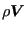
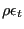
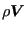
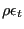

Next: Determining the physical variables Up: Three-Dimensional Navier-Stokes Calculations Previous: Updating the conservative variables Contents
For gases the conservative variables  ,
 and
 are smoothed on basis of the local
pressure gradient which was calculated in the previous fluid increment
(subroutine presgradient.f). The smoothing is done in routine
smoothshock.f. The primary parameter in the smoothing procedure is shockcoef,
which can take values between 0 (no smoothing) and 2. This parameter can be
set in the input deck on the *STEP card using the parameter SHOCK
SMOOTHING. If the solution diverges (this is frequently characterized by the
presence of NaN (Not a Number) in the solution, leading to negative time steps
or the divergence of the conservative to physical conversion routine
con2phys.f), the calculation if restarted with a shock smoothing coefficient
twice the previous value (or a value of 0.001 if the previous value was
0). Once the value of 2 is exceeded, the program stops with an error message.
,
 and
 are smoothed on basis of the local
pressure gradient which was calculated in the previous fluid increment
(subroutine presgradient.f). The smoothing is done in routine
smoothshock.f. The primary parameter in the smoothing procedure is shockcoef,
which can take values between 0 (no smoothing) and 2. This parameter can be
set in the input deck on the *STEP card using the parameter SHOCK
SMOOTHING. If the solution diverges (this is frequently characterized by the
presence of NaN (Not a Number) in the solution, leading to negative time steps
or the divergence of the conservative to physical conversion routine
con2phys.f), the calculation if restarted with a shock smoothing coefficient
twice the previous value (or a value of 0.001 if the previous value was
0). Once the value of 2 is exceeded, the program stops with an error message.